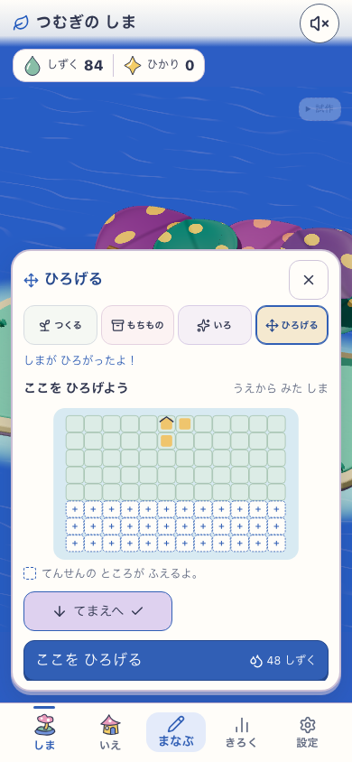
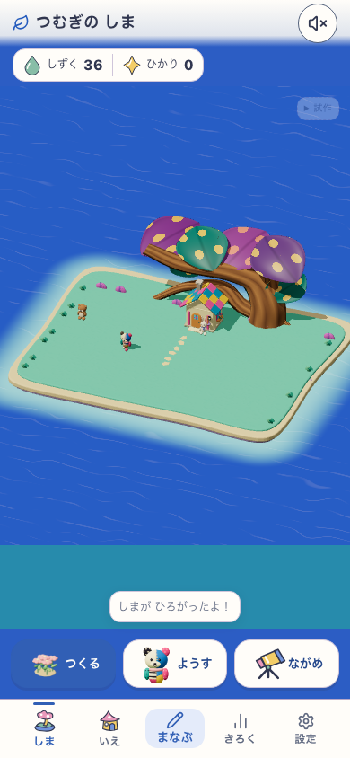
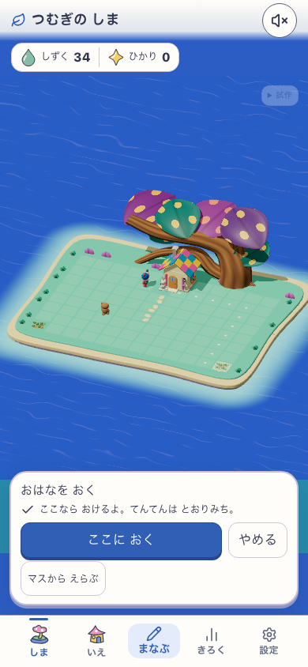
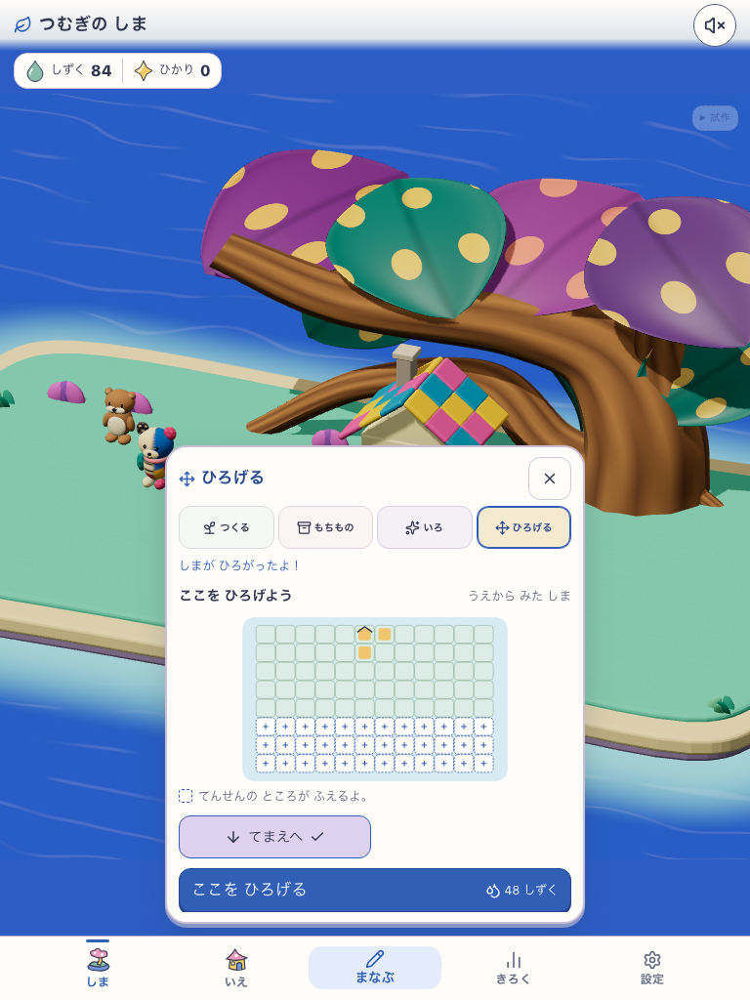
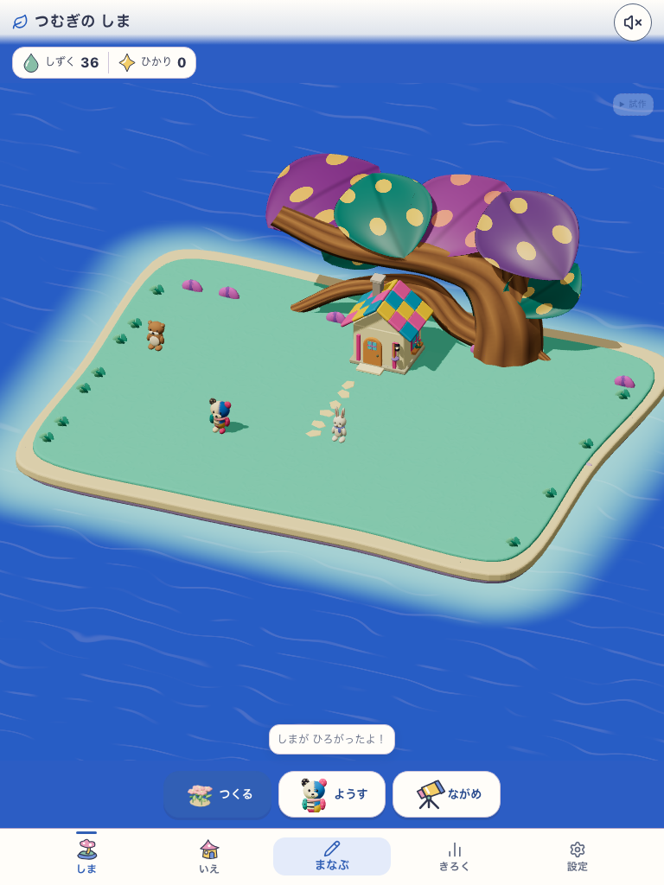
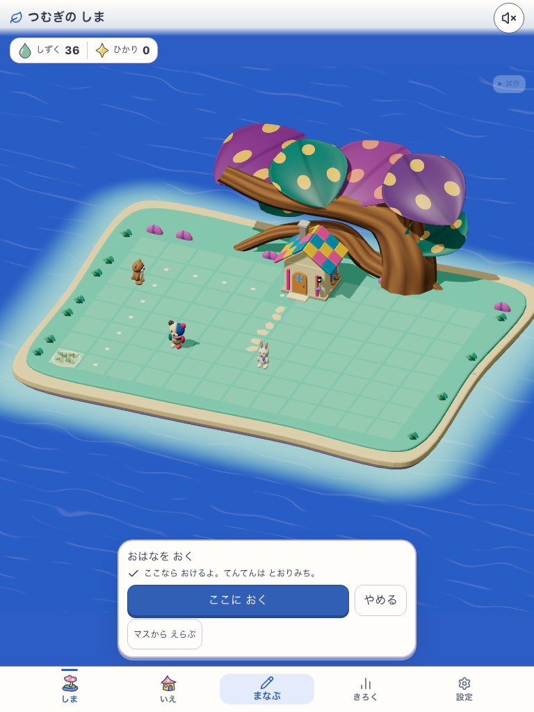

土地12×8 — DEV / land-12-24-48-v1
2026-09-13 | C3: 世界表現の参考 / キャラクター設定画ではない | Human N=0
 C3参考画像
C3参考画像phone

南3行の予告 / 48しずく
12×8の全景南西端へのタッチ配置
南東端へのタッチ配置 通常の学習入力へ復帰
通常の学習入力へ復帰tablet

南3行の予告 / 48しずく
12×8の全景
南西端へのタッチ配置南東端へのタッチ配置 通常の学習入力へ復帰
通常の学習入力へ復帰